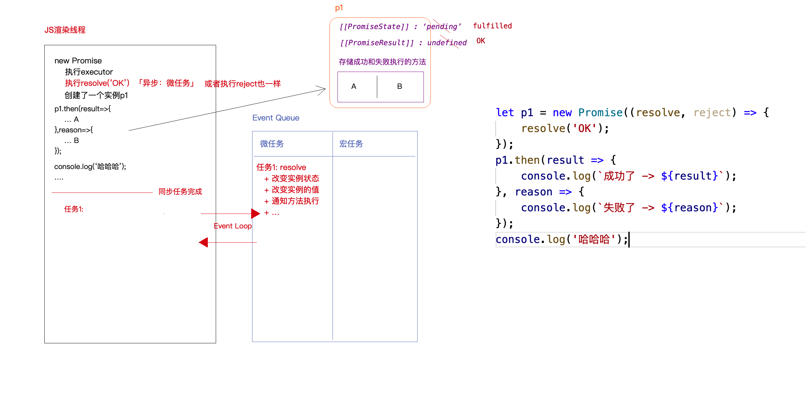
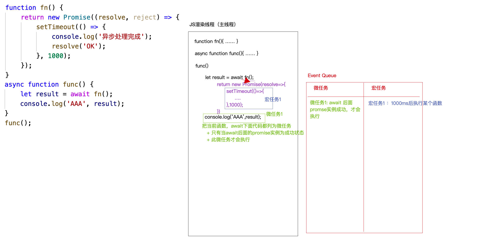
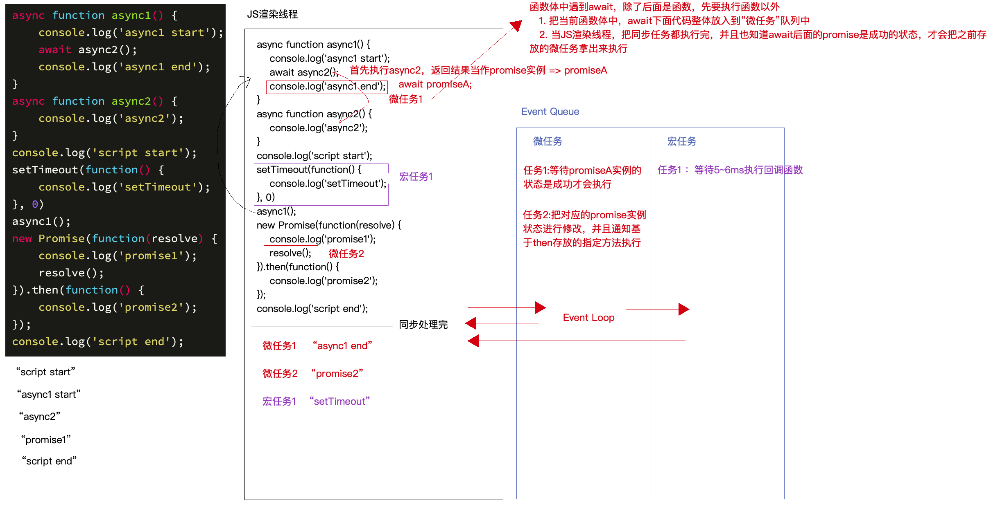
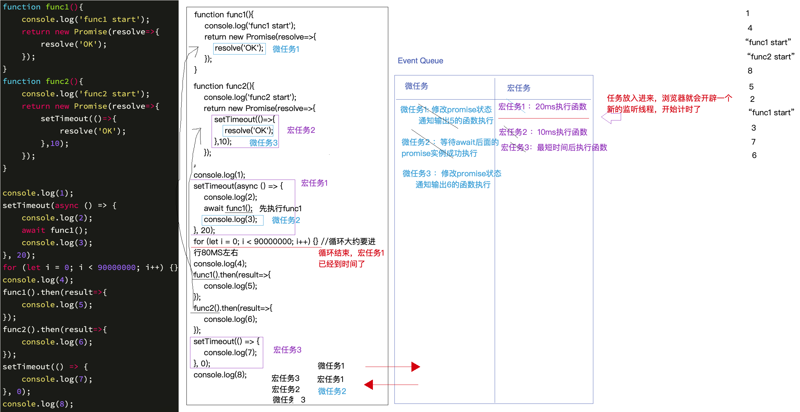

Promise
Promise
Promise
1 | 1. Promise 是 ES6 新增的一个内置类 |
1 | // 我们在new Promise 的时候 会立即把传进取函数的里面代码执行 |
1 | 1. new Promise的时候 会把我们传进去的函数立即执行 |
1 | // 我们 new Promise的时候 会立即执行我们传进去的 会反Promise的实例 |
Promise 上的方法
1 | 1.作为构造函数 在Promise.prototype |
1 | 2. 做为对象 Promise |
1 | 1.我们 new 了一个 Promise 实例 |
1 | // 这里我们成功之后 then的第一个函数传个null 进去 那么他会找下一个then中的A 函数 |
1 | // 问题来了 既然有状态 我们怎么取改变Promise的状态呢 |
1 | // 当我们调用resolve reject 实例的状态以后 我们可以通过then方法 去执行两个函数 |
1 | 1. Promise 中的异步 |
1 | let p1 = new Promise((resolve,reject) => { |

1 | // 执行then 方法 |
1 | let p1 = new Promise(() => { |
async 和 await
async
1 | 1. async 修饰一个函数 保证返回一个Promise实例 ES7中的新提供的语法 |
1 | async function fn(){ |
1 | // 如果代码报错了 就会返回一个失败的Promise |
1 | // 会返回一个失败的Promise 状态以你自己返回的Promise 为准 |
1 | // 即使里面 有异步的代码 也不会立即返回 |
await
1 | 1. await 修饰的 Promise 实例 会等待Promise实例状态为成功的时候 在执行 下面的代码 |
1 | // awiat 会把一个异步的代码 变成一个类似的同步代码 |

1 | ( async function () { |
1 | //实例 |

1 | // 实例 |
1 | 1. 首先代码是从上向下执行 那么 我们首先走到的console.log(1) 所以输出1 |



公告
感谢访问本站，如喜欢请收藏。本站主要分享前端知识，立志成为资深前端工程师，但目前是一个前端界的小学生 若喜欢可以打赏请博主喝一杯冰阔落
另外请大家多多支持淼哥的开源项目
https://github.com/flipped-aurora/gin-vue-admin
🌟🌟欢迎大家start 🌟🌟
欢迎加入博主的前端技术交流群